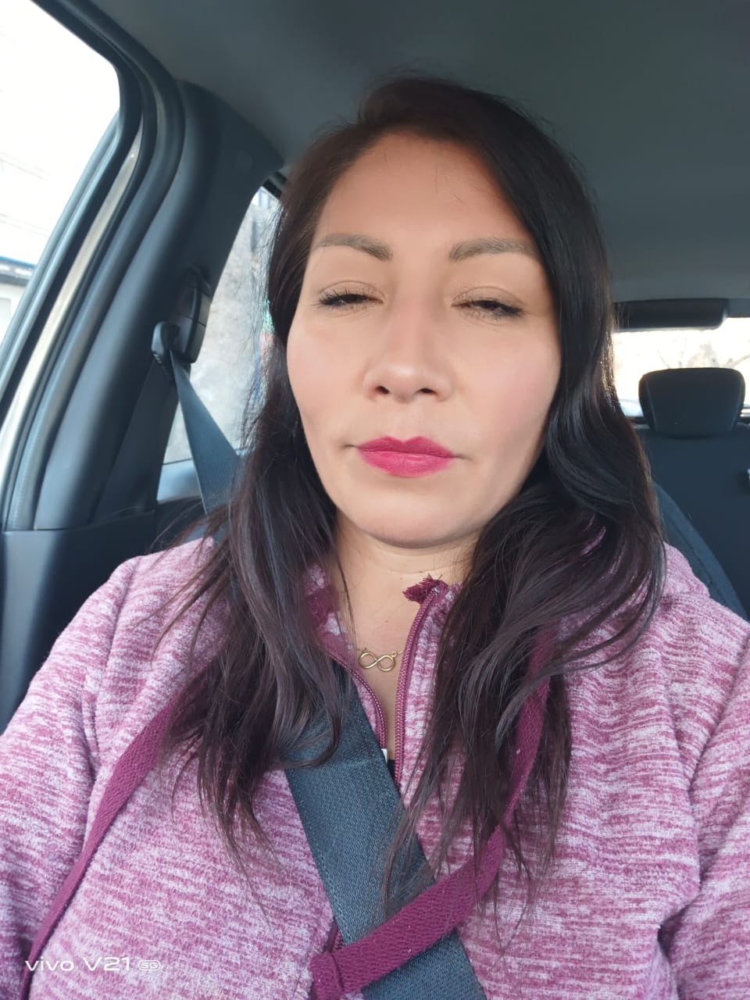
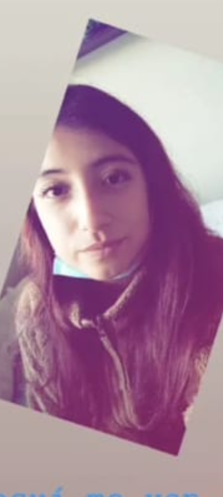
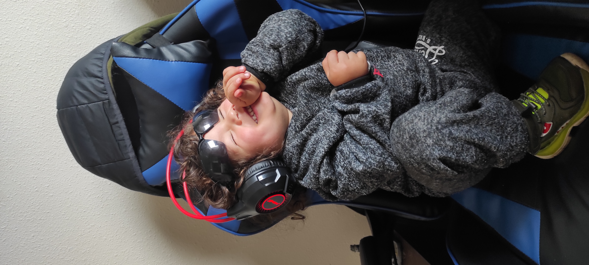
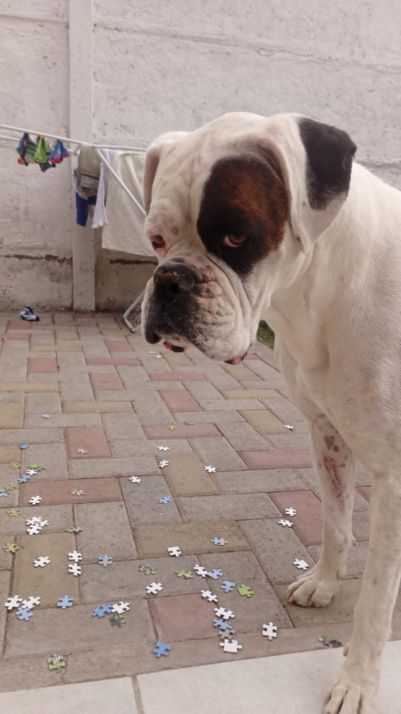

My Mom
La persona más trabajólica del mundo!

Ella es mí mamá, seguramente me va a
reclamar por la foto que escogí. Siempre
que le intento tomar una foto cierra los ojos
para luego culparme. Igual la amo!
My sister
La flojera del mundo acumulada en una persona.

A pesar de que le digas diez veces que haga algo,
que ayude en algo, que preste atención a algún
consejo que le des, ella te ignorará y seguira en su móvil.
Necesita un manual para sobrevivir urgente!
My Nephew
El Chanchito de tierra

Este sujeto es una bolita de amor,
le encanta rodar en la tierra y si es en agua mejor.
Aprendió gracias a su mamá que todo se puede conseguir
con un llanto falso, sobre todo comida!. Es muy tierno cualquiera se lo comería
My Dog
El rey de la casa

Mi mamá lo odia, pero es quien menos molesta
(cuando estoy yo). Si me voy de viaje algunos
días entra en depresión. Es culpa mía por
humanizarlo... Pero todos queremos darle lo mejor
a nuestras mascotas! lo amo mucho, ya está comenzando su etapa de vejez,
sigo disfrutando las tardes sentarme junto a él y acariciarlo.